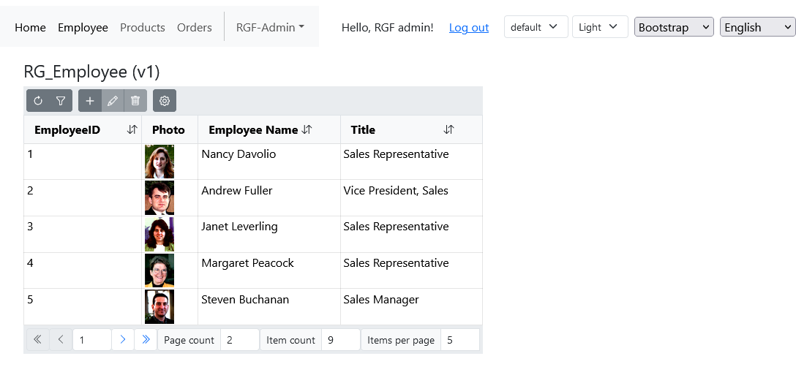
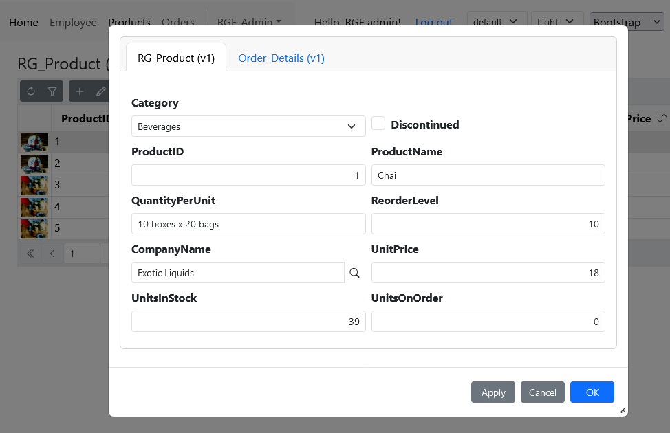

Blazor UI libraries
Default UI with Boostrap
The modern graphical representation of the RecroGrid Framework is developed in the Blazor environment. To use various component libraries, it is sufficient to add the appropriate package to the project, enabling high-functionality client-side rendering without the need for any additional added code. The initialization and interconnection of client and server-side services are described in the following references.
INFO
For more information, visit the library's website: Bootstrap · The most popular HTML, CSS, and JS library in the world.
Next step


Blazor 3rd party libraries
The RecroGrid Framework provides the option to create a custom graphical library or offers ready-made solutions using some third-party libraries.
By using the following packages, the RecroGrid Framework is capable of rendering the user interface with the components of the respective library. In this case, instead of the default UI package, you should use and initialize the following packages.
DevExpress
UI is distributed as the 
Install the package using .NET CLI or Package Manager
dotnet add package Recrovit.RecroGridFramework.Client.Blazor.DevExpressUI
Install-Package Recrovit.RecroGridFramework.Client.Blazor.DevExpressUI
var loggerFactory = builder.Services.BuildServiceProvider().GetRequiredService<ILoggerFactory>();
var logger = loggerFactory.CreateLogger<Program>();
builder.Services.AddRgfBlazorWasmBearerServices(builder.Configuration, logger);
builder.Services.AddDevExpressBlazor(configure => configure.BootstrapVersion = BootstrapVersion.v5);
var host = builder.Build();
await host.Services.InitializeRgfBlazorAsync();
await host.Services.InitializeRgfDevExpressUIAsync();
await host.RunAsync();
Warning
DevExpress requires a private NuGet feed. For more information, visit the library's website: DevExpress Blazor UI
Radzen
UI is distributed as the 
Install the package using .NET CLI or Package Manager
dotnet add package Recrovit.RecroGridFramework.Client.Blazor.RadzenUI
Install-Package Recrovit.RecroGridFramework.Client.Blazor.RadzenUI
var loggerFactory = builder.Services.BuildServiceProvider().GetRequiredService<ILoggerFactory>();
var logger = loggerFactory.CreateLogger<Program>();
builder.Services.AddRgfBlazorWasmBearerServices(builder.Configuration, logger);
builder.Services.AddScoped<Radzen.DialogService>();
var host = builder.Build();
await host.Services.InitializeRgfBlazorAsync();
await host.Services.InitializeRgfRadzenUIAsync();
await host.RunAsync();
INFO
For more information, visit the library's website: Radzen Blazor Components
Syncfusion
UI is distributed as the 
Install the package using .NET CLI or Package Manager
dotnet add package Recrovit.RecroGridFramework.Client.Blazor.SyncfusionUI
Install-Package Recrovit.RecroGridFramework.Client.Blazor.SyncfusionUI
var loggerFactory = builder.Services.BuildServiceProvider().GetRequiredService<ILoggerFactory>();
var logger = loggerFactory.CreateLogger<Program>();
builder.Services.AddRgfBlazorWasmBearerServices(builder.Configuration, logger);
builder.Services.AddSyncfusionBlazor();
Syncfusion.Licensing.SyncfusionLicenseProvider.RegisterLicense(builder.Configuration.GetValue<string>("Syncfusion:LicenseKey"));
var host = builder.Build();
await host.Services.InitializeRgfBlazorAsync();
await host.Services.InitializeRgfSyncfusionUIAsync();
await host.RunAsync();
INFO
For more information, visit the library's website: Syncfusion Blazor Components
Telerik
UI is distributed as the 
Install the package using .NET CLI or Package Manager
dotnet add package Telerik.UI.for.Blazor
dotnet add package Recrovit.RecroGridFramework.Client.Blazor.TelerikUI
Install-Package Telerik.UI.for.Blazor
Install-Package Recrovit.RecroGridFramework.Client.Blazor.TelerikUI
var loggerFactory = builder.Services.BuildServiceProvider().GetRequiredService<ILoggerFactory>();
var logger = loggerFactory.CreateLogger<Program>();
builder.Services.AddRgfBlazorWasmBearerServices(builder.Configuration, logger);
builder.Services.AddTelerikBlazor();
var host = builder.Build();
await host.Services.InitializeRgfBlazorAsync();
await host.Services.InitializeRgfTelerikUIAsync();
await host.RunAsync();
Warning
Telerik requires a private NuGet feed. For more information, visit the library's website: Telerik Blazor UI